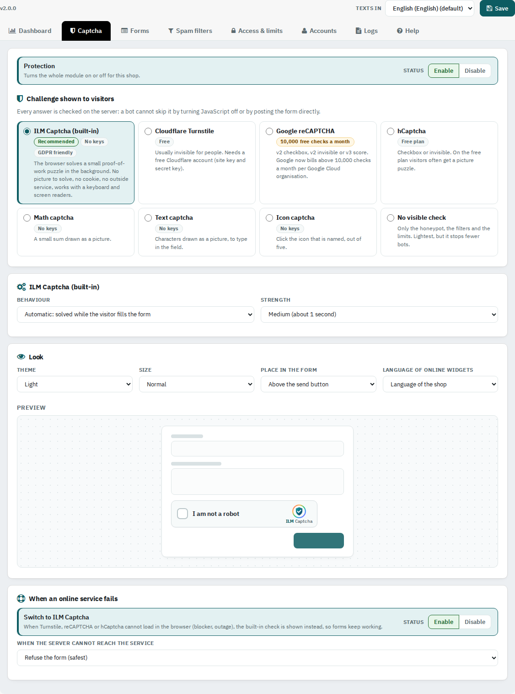
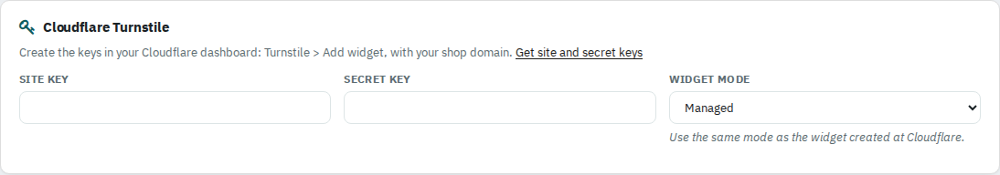
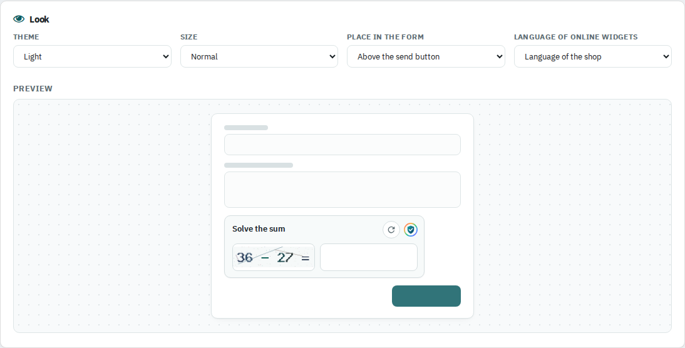

Pick the check visitors see: the built-in ILM Captcha, a picture, or Turnstile, reCAPTCHA or hCaptcha with your keys.

Enable or Disable turns the whole module on or off for this shop.
Behaviour: Automatic solves the puzzle while the visitor fills the form (the box appears only then). Checkbox shows an "I am not a robot" box. Strength: Medium takes about one second; use High during heavy spam.
Each provider has a link to its key page. Create the keys for your shop domain and paste the site key and the secret key. reCAPTCHA has one pair of keys per type. For reCAPTCHA v3, Lowest score accepted is 0.5 by default; a higher value stops more bots and some people.

Theme light, dark or follow the device. Size normal or compact. Place in the form: above the send button or under the e-mail field. Language of online widgets: shop or browser language. The preview shows the built-in challenges.

Switch to ILM Captcha: when Turnstile, reCAPTCHA or hCaptcha cannot load in the browser (ad blocker, outage), the built-in check is shown, so your forms keep working. When the server cannot reach the service: refuse the form (safest) or accept it and let the other checks run.